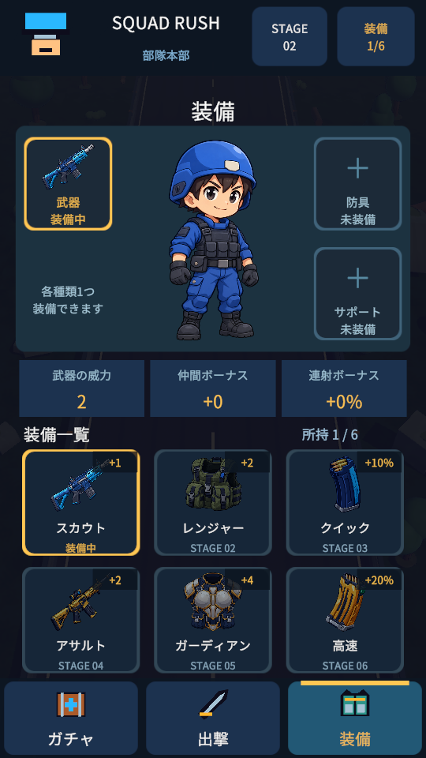
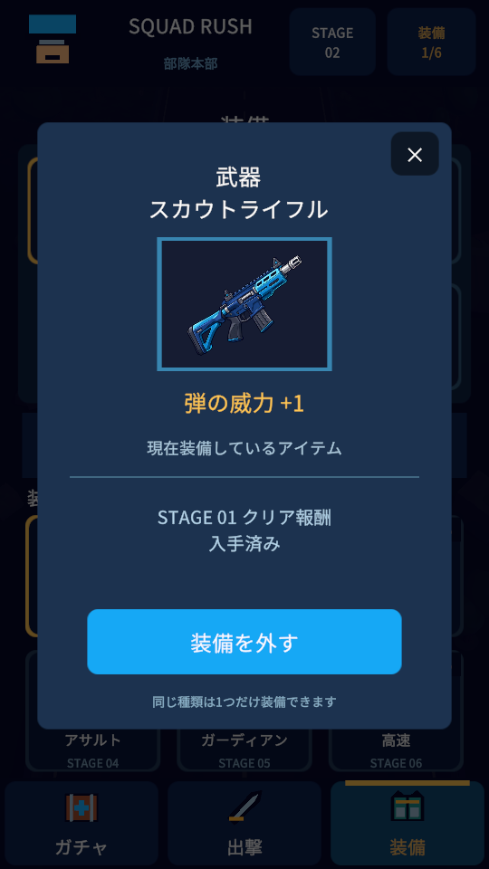
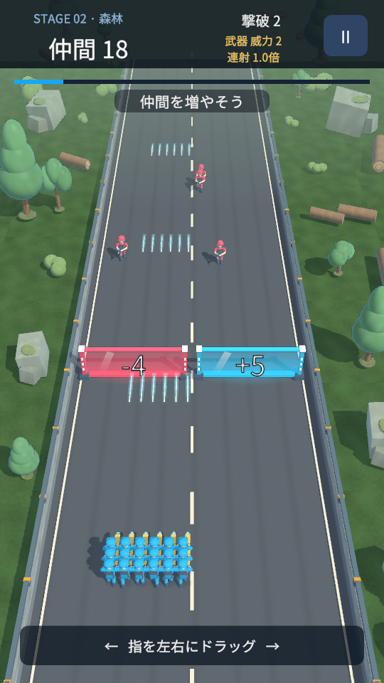
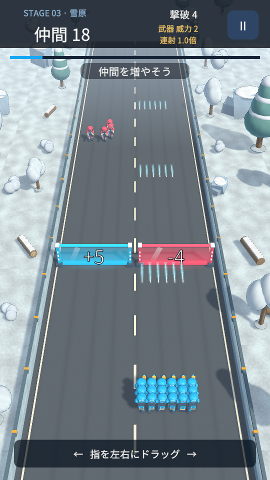

SQUAD RUSH · 試作 0.9.0
仲間を増やして、
敵の大群を突破しよう。
装備画面がアニメ調のイラストに。
絵と能力差を見て、部隊の装備を選ぼう。
広告・課金なし。ブラウザ版はAndroid・iPhone・PCで試せます。AndroidアプリはAndroid 8.0以降のARM64端末向けです。

クリア報酬で装備を集めよう
アニメ調の人物の周囲に武器・防具・サポートの装備枠、その下に装備の絵の一覧を配置。タップすると大きな絵、効果、入手ステージ、現在の装備との差分を確認して、装備・解除できます。所持品と装備状態は端末内に保存し、ガチャは準備中の画面のみです。

ランダムな景色と、次のステージへ
砂漠、森林、雪原へ。木や岩の配置は挑戦ごとに変わり、走っている間も新しい景色が現れます。クリアすると次へ進み、進行はこの端末・ブラウザに自動保存します。


遊び方
- ホーム上部のステージ名でステージを選び、「出撃」を押す。ホーム中央下の「出撃」から現在のステージへ直接出撃することもできます。
- 指を左右にドラッグして移動。PCは左右キーでも操作できます。
- 射撃は自動。加算・倍率ゲートや青いBOXで仲間を最大1000人まで増やそう。
- 金色のBOXは威力、緑色のBOXは連射を強化。各ステージで武器を育てよう。
- 終盤のボスを倒すとクリア。装備を入手し、ホームの「装備」で付け替えよう。
- 仲間が0人になったら同じステージを再挑戦。次回も続きから遊べます。
スマホでの起動
Android：APKをダウンロードし、ダウンロード一覧から開いてインストールします。許可の確認が表示された場合は、このアプリをインストールする提供元を確認してください。
iPhone：Safariで「ブラウザで遊ぶ」を開いてください。配布中のAPKはAndroid専用です。iPhone用のネイティブアプリはまだ配布していません。
初回のブラウザ版は読み込みに時間がかかります。実機の性能によって動作が変わるため、これは確認用の試作です。